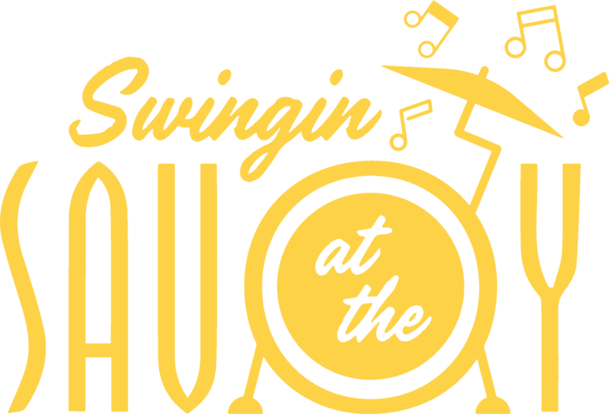
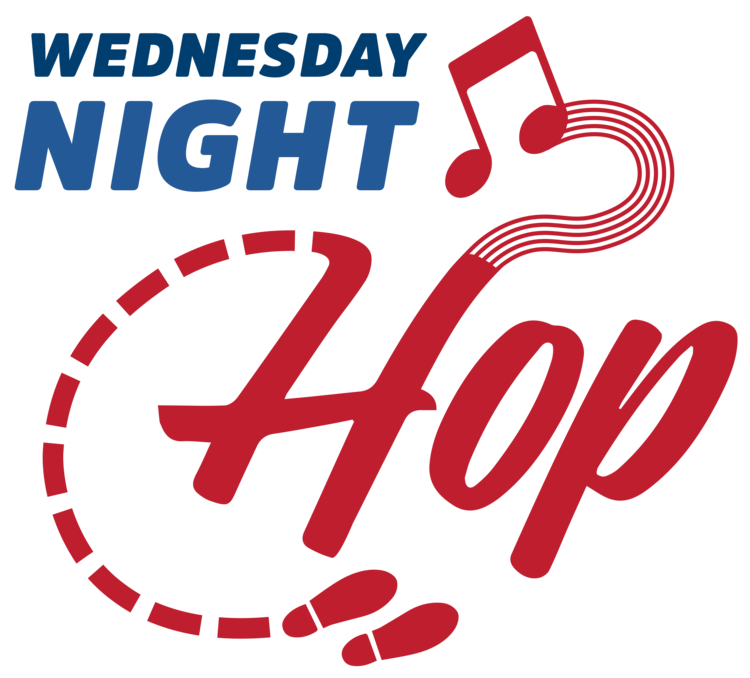
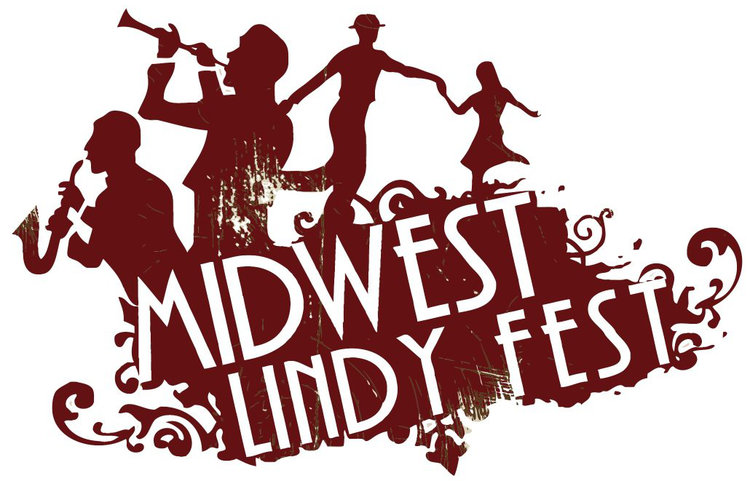

- 
- 
- 
The Hot Baked Goods play frequently around the San Francisco Bay Area and beyond for swing dances, private parties, weddings, corporate events, and music venues.
“Dancing to music played by dancers is always a treat, and dancing to the Hot Baked Goods is a delightful experience. Looking out on the floor, it’s so clear that Ryan and the band are collaborating with dancers, and the floor is more alive and joyful because of that connection. The whole group is full of some of the most talented people I’ve met, and I’m so glad they all have the opportunity to work together and share their music with dancers. Working with the band was a breeze - they were excited about our vision for having live music at the late night and were excited to play for our competitions. I’m glad we’re having them back this year!”
“The Hot Baked Goods have that special something that every great dance band must have — a keen and well developed sense of what will get people moving on the dance floor and how to keep them there. They are consummate professionals, and a pleasure to work with as an event organizer. Their sound is both sophisticated and joyously raw. I especially enjoy the vocal stylings of their lead vocalist, Jessica King.”
“The Hot Baked Goods bring the goods! I can’t say enough about this band to do it justice but what a great group of musicians and all around wonderful folks. Truly demiurgic musicians who always bring a wonderful crowd of talented, polished and polite dancers.They really put on a show not to be missed! I see a prodigious and thoughtful future for this band and am very honored to not only work with them but to call them friends.”
“It was a great pleasure hosting The Hot Baked Goods at our event last September. The band was a pleasure to work with and best of all, the music was FANTASTIC. They are easily the best band we have hosted. Thank you so much for making the trip to Eugene, OR. We hope to host you again SOON.”
“I’ve had the pleasure to work with and hire The Hot Baked Goods several times now for my monthly dances in San Francisco and for my annual convention weekend in Sacramento called Swing California and the California Swing Dance Championships. They have been nothing but professional and know how to put on a great show. Whether it’s for a company holiday party or a swing dance event, The Hot Baked goods will pack the dance floor! They also have a huge following so you are guaranteed to have great swing dancers at your event.”
“I hired The Hot Baked Goods to play our company holiday party and boy was I impressed! Every member of the band is extremely talented and very friendly. They showed up looking like a million bucks and sounded even better. They expertly judged the size of the space and adjusted their volume accordingly so that no one left with blown eardrums. Ryan was very responsive and got me all the info I needed to make a decision in a timely manner. He even recommended some dancers to perform and teach our guests some swing dance moves. Dancing with them was some of the most fun I had all evening! The Hot Baked Goods sounded absolutely incredible and our whole party loved them. They played with such joy and energy that it was contagious. I would recommend them to anyone and can’t wait for the opportunity to work with them again.”
“We hired The Hot Baked Goods for our weekly Swing dance event in San Francisco and they were wonderful!! Not only amazingly talented musicians but also some of the nicest people we know. Their music is incredible for dancers and listeners alike. But our favorite part about them was the joy you could see on their faces. You can tell they’re having a blast. That energy absolutely resonated with our dancers and was infectious across the dance floor.”
“The Hot Baked Goods have played at our swing dance for several years, and have always brought the utmost in musicianship, professionality, and a fun atmosphere perfect for dancing. They really know how to play for dancers, many being dancers themselves. I trust them to play excellent hot jazz, play with the dancers, and make a dance party a fun, memorable night.”
“We had the pleasure of having the Hot Baked Goods play at our regular Saturday swing dance in June 2017 to a packed house of happy dancers. With much of the group being experienced Lindy Hoppers, The HBG chose great traditional jazz tunes to keep the floor full all night, and performed them with panache and a high level of musicianship. All of this, and that they were so easy to work with, makes The Hot Baked Goods a wonderful choice for any swing dance organizer.”
“If you want a band that excites your new dancers, energizes your advanced dancers, and even brings out those that have stopped dancing, you gotta book The Hot Baked Goods. As lindy hoppers themselves, they know what to play to get everyone on the floor and create that fun energy that got us all addicted to lindy hop in the first place!”
“Heartfelt musicians first. Fun, skilled performers coming in as a very close second. The Hot Baked Goods delivers professionalism paired with party prowess and will knock the socks off of your guests! The band’s versatility and flair is packaged with a no-stress, life-is-good vibe. This rare combination of great human beings and talented musicians is worth… well, booking without hesitation!”
“The Hot Baked Goods are a professional band that’s easy to work with. I hired them for my event, BluesQuake, to represent the slow jazz portion that blues dancers love. Highlights: Communication before the event was clear and responses were timely; They arrived at the event early, were fully set up, completed their sound checks on time, and started at 9:00pm on the nose; They were gracious when given direction, and applied it immediately. The result was a blowout performance that brought the house down! They were so good, we hired them for the following year’s event, and made them the Saturday night headliners! BONUS: This band is made up of dancers. As such, they know what standards dancers love. They are keenly aware of how to manage tempos and energy levels, and also keep song length on the shorter side, to allow dancers to switch partners. 10 out of 10, would hire again.”
“The Hot Baked Goods are a tantalizing musical treat for dancers whenever they play at our weekly dance party. Rooted in hot vintage jazz, they play a great variety of rhythms, tempos, and toe tapping styles that draws dancers to the floor and often works the crowd into happy frenzy. Easy to work with and always a solid show!”